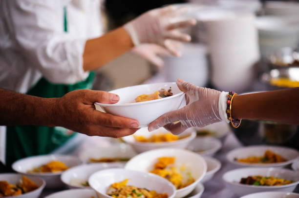

Food waste Management System , we are dedicated to tackling food waste by efficiently redistributing surplus food from restaurants, weddings, and large events to those in need. Our Food Waste Management System is designed to bridge the gap between food surplus and hunger, ensuring that perfectly good food is not wasted but reaches those who need it the most.
We aim to create a sustainable and hunger-free world by rescuing excess food from restaurants, weddings, and other events. Through smart technology and strong partnerships, we make food redistribution simple, efficient, and impactful. Why Choose Us? ✅ Reduces Food Waste – Prevents good food from being thrown away. ✅ Feeds the Needy – Helps bridge the gap between surplus and scarcity. ✅ Cost-Effective for Businesses – Reducing waste can lower disposal costs and enhance brand reputation. ✅ Environmentally Friendly – Diverting food from landfills reduces carbon footprint and promotes sustainability.
Be a part of the food rescue revolution! Whether you’re a restaurant, wedding caterer, or event organizer, partner with us to make a difference. Let’s turn surplus food into smiles!